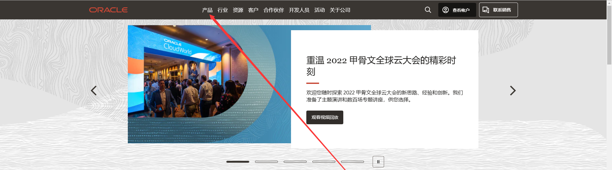
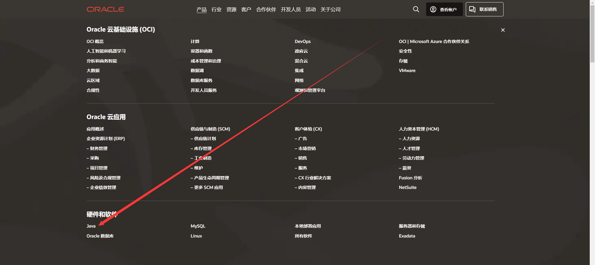
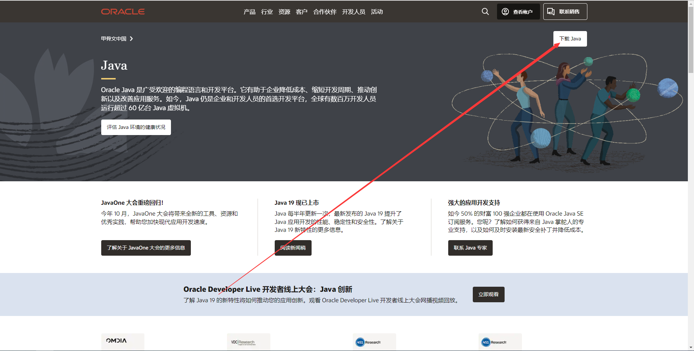
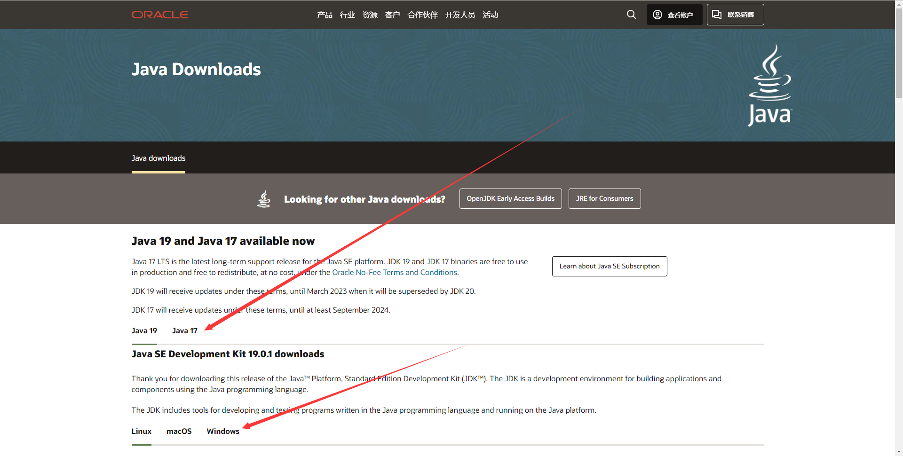

java环境
这里教java，俗称电脑版的mc 的服务器
如果你开1.15或更早版本的mc服务器，请使用java8
如果你开1.17或后面版本的mc服务器，建议用java17
如果你开1.16版本的服务器，推荐使用java11
性能更好的java
具体你可以看这篇贴子
[2022.1.29] 换个 JVM，最高节省43.3%内存，提高36.9%CPU效率。 - 联机教程 - Minecraft(我的世界)中文论坛 - (mcbbs.net)
javaSE？EE？ME？
如果你想了解，可以读读这个
你用SE就好了
lava邪教
下载教程
尽管在
如果你开1.17或后面版本的mc服务器，建议用java17
这里，你直接点蓝色字体就能跳转到windows的java17SE的下载
但是我希望，你自己能知道怎么找到它，别当个这么低级的伸手党
第一步，浏览器搜索甲骨文官网 请确认你搜到的网站是www.oracle.com

环境变量
如果你安装java使用的是exe格式的安装程序，可以跳过这部分
在后面开服bat那边过来再看也行
那么bat命令中开头那个java是什么意思呢？
你 让 电脑 用 java 启动核心名这个东西
电脑会从你这个目录，对就是你弹出来的cmd上显示的路径，这个文件夹里找叫java的东西，找不到的话就去环境变量里翻，翻不到的话他应该会跟你说这个
xxx 不是内部或外部命令，也不是可运行的程序
或批处理文件。
为什么会出现这种情况？
可能你直接弄了个java的压缩包过来，而不是运行java的安装程序
此时你可以给他指定路径，比如这样
"C:\Program Files\Java\jre1.8.0_341\bin\java.exe" -jar 核心名
C:\Program Files\Java\jre1.8.0_341\bin\java.exe 是java8的默认安装路径
或者你也可以手动配置环境变量，咱懒得写了，随便贴个链接了事吧点这里